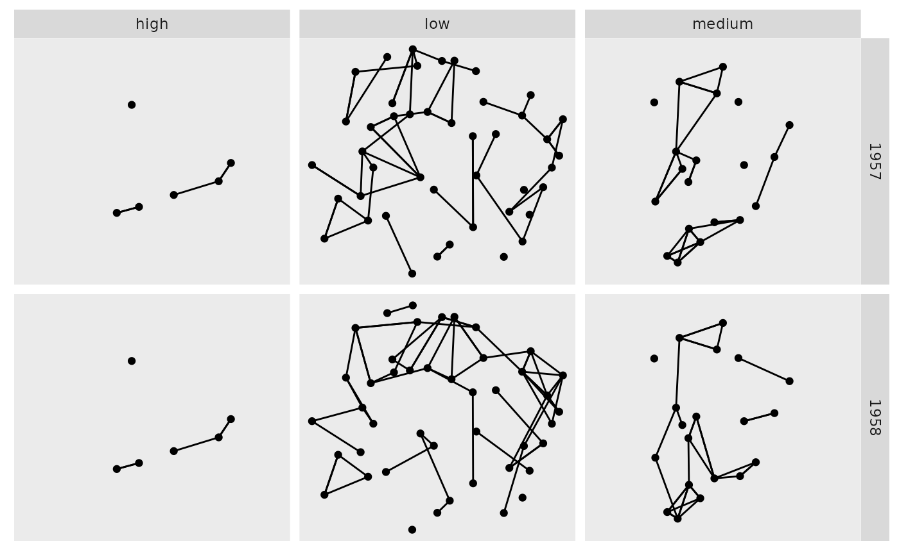

R/facet_graph.R
facet_graph.RdThis function is equivalent to ggplot2::facet_grid() in that it
allows for building a grid of small multiples where rows and columns
correspond to a specific data value. While ggplot2::facet_grid()
could be used it would lead to unexpected results as it is not possible to
specify whether you are referring to a node or an edge attribute. Furthermore
ggplot2::facet_grid() will draw edges in panels even though the
panel does not contain both terminal nodes. facet_graph takes care of
all of these issues, allowing you to define which data type the rows and
columns are referencing as well as filtering the edges based on the nodes in
each panel (even when nodes are not drawn).
facet_graph(
facets,
row_type = "edge",
col_type = "node",
margins = FALSE,
scales = "fixed",
space = "fixed",
shrink = TRUE,
labeller = "label_value",
as.table = TRUE,
switch = NULL,
drop = TRUE
)This argument is soft-deprecated, please use rows
and cols instead.
Either 'node' or 'edge'. Which data
type is being facetted in the rows and columns. Default is to facet on nodes
column wise and on edges row wise.
Either a logical value or a character
vector. Margins are additional facets which contain all the data
for each of the possible values of the faceting variables. If
FALSE, no additional facets are included (the
default). If TRUE, margins are included for all faceting
variables. If specified as a character vector, it is the names of
variables for which margins are to be created.
Are scales shared across all facets (the default,
"fixed"), or do they vary across rows ("free_x"),
columns ("free_y"), or both rows and columns ("free")?
If "fixed", the default, all panels have the same size.
If "free_y" their height will be proportional to the length of the
y scale; if "free_x" their width will be proportional to the
length of the x scale; or if "free" both height and width will
vary. This setting has no effect unless the appropriate scales also vary.
If TRUE, will shrink scales to fit output of
statistics, not raw data. If FALSE, will be range of raw data
before statistical summary.
A function that takes one data frame of labels and
returns a list or data frame of character vectors. Each input
column corresponds to one factor. Thus there will be more than
one with vars(cyl, am). Each output
column gets displayed as one separate line in the strip
label. This function should inherit from the "labeller" S3 class
for compatibility with labeller(). You can use different labeling
functions for different kind of labels, for example use label_parsed() for
formatting facet labels. label_value() is used by default,
check it for more details and pointers to other options.
If TRUE, the default, the facets are laid out like
a table with highest values at the bottom-right. If FALSE, the
facets are laid out like a plot with the highest value at the top-right.
By default, the labels are displayed on the top and
right of the plot. If "x", the top labels will be
displayed to the bottom. If "y", the right-hand side
labels will be displayed to the left. Can also be set to
"both".
If TRUE, the default, all factor levels not used in the
data will automatically be dropped. If FALSE, all factor levels
will be shown, regardless of whether or not they appear in the data.
Other ggraph-facets:
facet_edges(),
facet_nodes()
library(tidygraph)
gr <- as_tbl_graph(highschool) %>%
mutate(popularity = as.character(cut(centrality_degree(mode = 'in'),
breaks = 3,
labels = c('low', 'medium', 'high')
)))
ggraph(gr) +
geom_edge_link() +
geom_node_point() +
facet_graph(year ~ popularity)
#> Using "stress" as default layout
